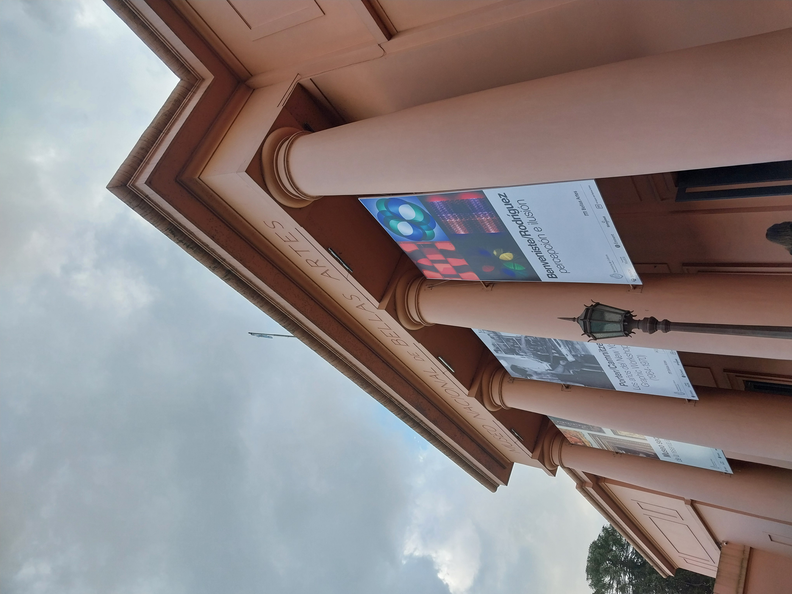
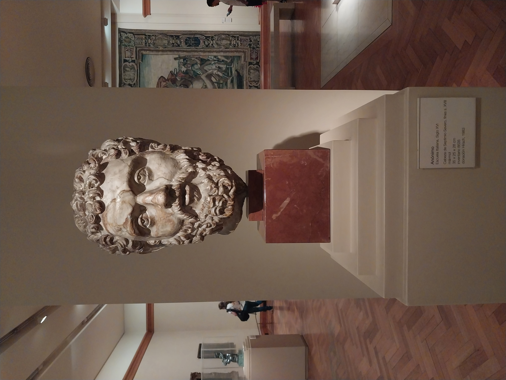
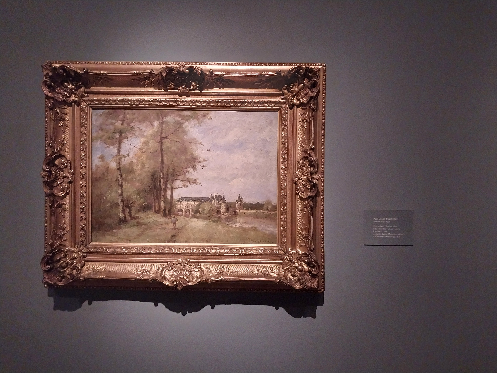
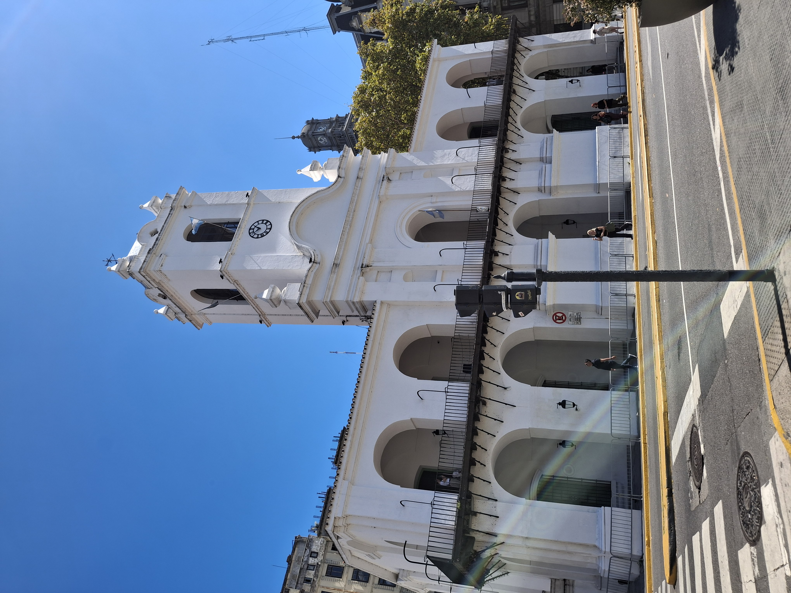
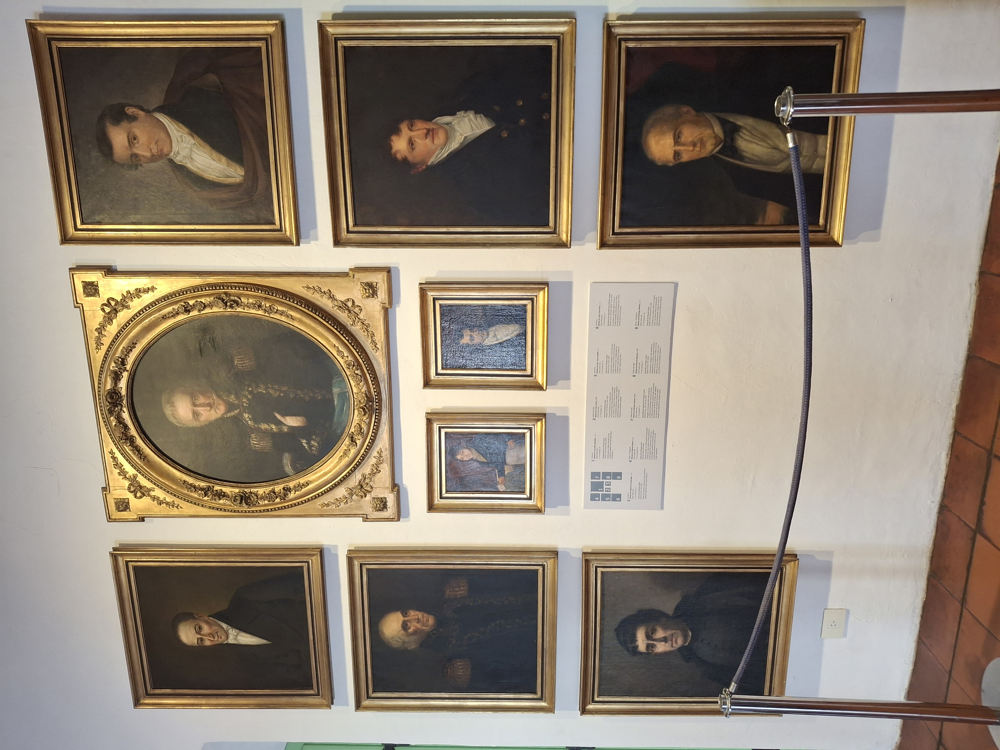
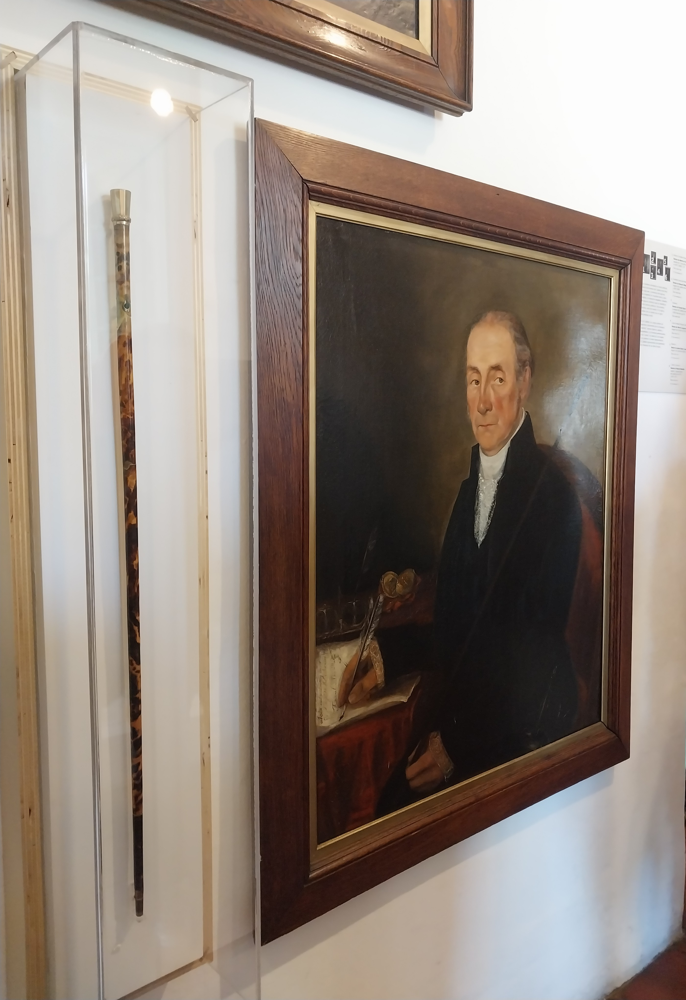

La Ciudad Autonoma de Buenos Aires cuenta con una gran variedad de museos históricos y artísticos. Aquí algunos destacados y su importancia cultural:
Museo Nacional de Bellas Artes
El Museo Nacional de Bellas Artes es uno de los más importantes de América Latina. Alberga una vasta colección de arte argentino e internacional: entre sus salas, se pueden encontrar obras de artistas como Goya, Monet, entre otros, junto con grandes nombres del arte argentino como Berni. Su entrada gratuita y su programación cultural lo convierten en un espacio accesible y educativo para toda la comunidad.



Museo Nacional del Cabildo y la Revolución de Mayo
Situado frente a la histórica Plaza de Mayo, el Cabildo fue el centro del poder colonial en Buenos Aires. Hoy funciona como museo y conserva objetos, documentos y salas ambientadas que permiten entender los orígenes de la independencia argentina y el proceso de formación del Estado nacional.



Museo de la Casa Rosada
El Museo de la Casa Rosada se encuentra en la parte posterior de dicha sede del Poder Ejecutivo Nacional. A través de objetos personales, mobiliario histórico, y material visual, el museo narra la historia de los presidentes argentinos desde 1853 hasta la actualidad. También conserva restos arqueológicos del antiguo Fuerte de Buenos Aires y de la Aduana Taylor, lo que permite un recorrido por distintas etapas de la historia política del país.